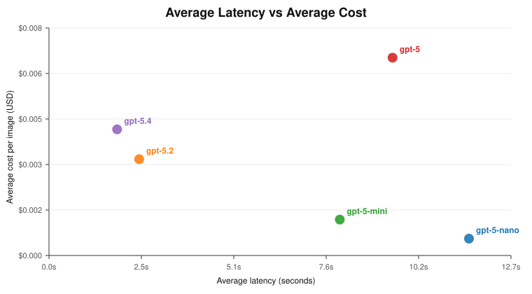
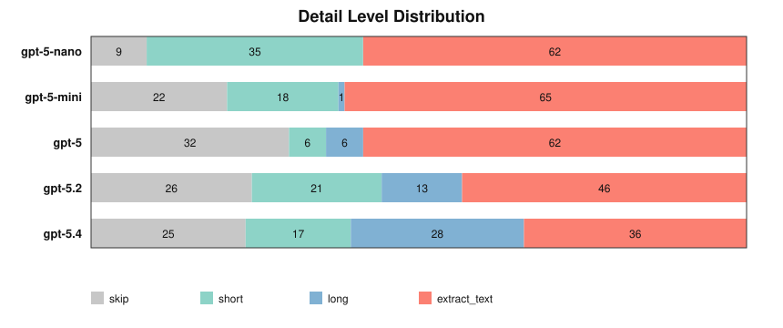
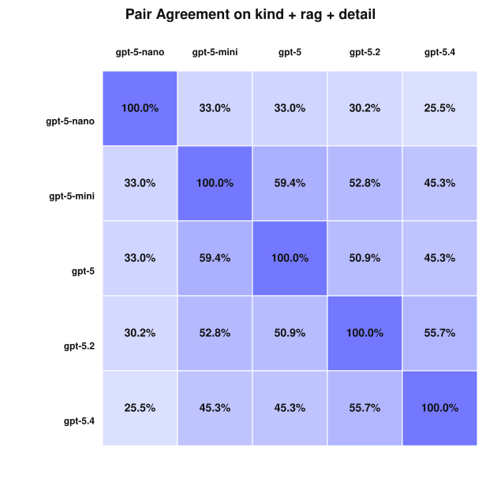

gpt-5.2 と gpt-5.4 が今回もっとも高速で、平均レイテンシはそれぞれ 2.48 秒、1.88 秒でした。gpt-5-nano は 1 画像あたり約 $0.0006 と最安でしたが、大きいモデル群とのズレも最も大きくなりました。gpt-5.2 と gpt-5.4 が全体として最も近く、kind + rag_value + detail_level の完全一致率は 55.7% でした。kind は比較的安定しており、おおむね 82%〜95% の一致率でした。一方で detail_level は 44%〜75% とかなり揺れます。gpt-5 は extract_text を最も積極的に使い（106 件中 62 件）、gpt-5.4 は long をより多く使っています（106 件中 28 件）。gpt-5-nano は、小さなアイコン、QR コード、ページ断片に対して text_as_image や table_or_form を過剰に付ける傾向がありました。usage から推定しています。この GPT-5 系 vision 設定では、それが比較の正しい基準です。gpt-5.4-mini と gpt-5.4-nano で再検証する価値があります。gpt-5 の pricing は公式価格表で再確認済みです。今回の総コストが高いのは pricing バグではなく token usage の多さによるものです。
gpt-5 は特に注意が必要です。pricing 設定は正しい一方で、実測 token usage が多く、今回の run では gpt-5.2 より高コストになりました。usage ベースなので、API が信頼できる usage を返す限り、画像サイズを別途手調整する必要はありません。
gpt-5 はほぼ二極的で、extract_text と skip が多く、中間的な判断が少ないです。gpt-5.4 は long を他モデルよりかなり多く使います。後段でより丁寧な enrichment をしたいなら有利かもしれません。gpt-5-nano は、他モデルが skip や long / extract_text を選ぶ場面で short に寄る傾向があります。
kind だけを見たいなら、このモデル群はすでにかなり一貫しています。detail_level です。モデル差の多くはここから来ています。gpt-5.2 は現時点で最も良い基準点に見えます。gpt-5.4 に近く、それでいて安価です。kind より detail_level の不一致のほうが重要です。gpt-5-nano で不安定です。gpt-5.2 にするのがよさそうです。今回の run では高速で、gpt-5.4 にかなり近く、それより明確に安価です。detail_level 判断がほしい場合は gpt-5.4 を spot check 用に残すのがよいです。gpt-5-mini が有力です。少なくとも kind については gpt-5 / gpt-5.2 に比較的よく追随しています。gpt-5-nano を唯一の分類器にするのは避けたほうがよさそうです。gpt-5.4-mini と gpt-5.4-nano を低レイテンシ寄りの新しい小型モデルとして位置づけているので、次の比較に加える。表を含む完全版は Markdown レポートを参照: image_eval_analysis.md